Using the File Gallery box on post edit screen
When adding a new post (or editing an existing post with no attachments), this is what the File Gallery box on your editing screen should look like.
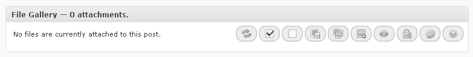
Just a notification and some buttons on the right.
When you add some attachments to the post, the box will automatically refresh itself and it will look something like this:
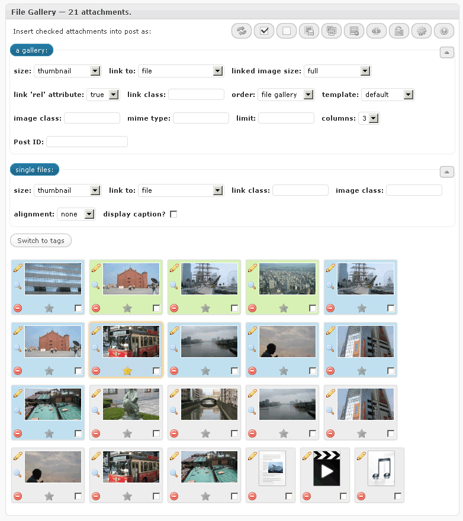
Attachment colors
Some attachments might appear with background colors set to other than grey.
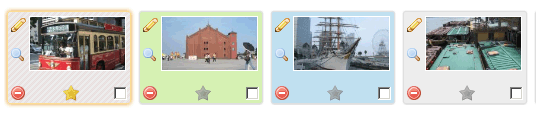
Here's what each color means:
- Grey - default (original with no copies)
- Blue - a copy
- Yellow - set as featured image
- Green - an original with copies
Main buttons
On the top right of the box, there is a set of buttons which are used for operations on multiple attachments.
- Button number one will refresh the attachment list.
- Buttons number two and three will check / uncheck all the attachments.
- Button number four will save current attachment order.
- Button number five will open a dialog for copying all attachments from some other post to the current one.
- Button number six will delete all the checked attachments
- Button number seven will detach all the checked attachments
Inserting a gallery and inserting single images
Beneath the buttons are two fieldsets.
First fieldset contains options for when you want to insert a gallery into a post.
The second one contains options for when you want to insert a one or more single images into a post.
They both operate on attachments you check in the attachment list below the fieldsets.
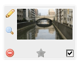You can check attachments either by single clicking the attachment thumbnail, or by clicking the checkbox in the lower right corner of each attachment representation.
After you choose your options and select attachments, use the blue buttons on top of each filedset to insert either a gallery, or a single image.
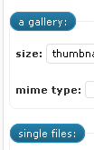
Yes, those are clickable buttons :)
In the top right corner of each fieldset is a small button / icon 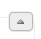. Click that button to toggle either of the fieldsets. Their state will be automatically saved and remembered for the next time you edit a post.
Manipulating the attachments
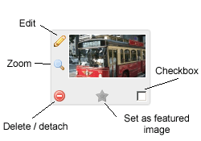
Each attachment representation has a few buttons / icons.
Top left button (a magnifying glass) opens a bigger version of the image in a lightbox, if that attachment is an image viewable in browser. This icon is not present if the attachment is not an image.
Beneath the magnifying glass button is edit button which opens attachment editing screen. You can also double click on the attachment thumbnail to trigger the same action.
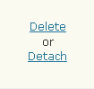In the bottom left corner is the delete / detach button. It will open a small dialog over the thumbnail when clicked: Clicking on the button again will hide the dialog, and clicking on either "Delete" or "Detach" links will open another dialog for confirmation.
 Click
"Continue" to delete / detach that attachment, or "Cancel" to,
well, cancel the operation :)
Click
"Continue" to delete / detach that attachment, or "Cancel" to,
well, cancel the operation :)
At the bottom, in the middle, is the set / unset featured image (post thumbnail) button.
In the bottom right corner is the checkbox used to check attachments for operations involving the Main buttons or the fieldsets beneath them.
(Re)ordering the attachments
Use your mouse to click on an attachment thumbnail and then drag it to another position in the list: 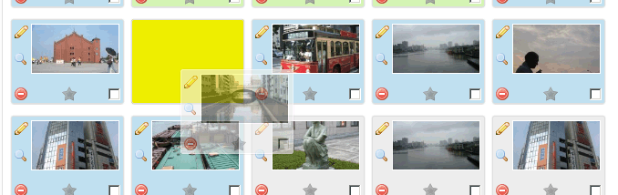
Attachment order is not saved automatically so please use the third main button the save it.
Attachment editing screen
When you click the "Edit attachment" button, or double click the attachment thumbnail, you will be presented with the following screen:
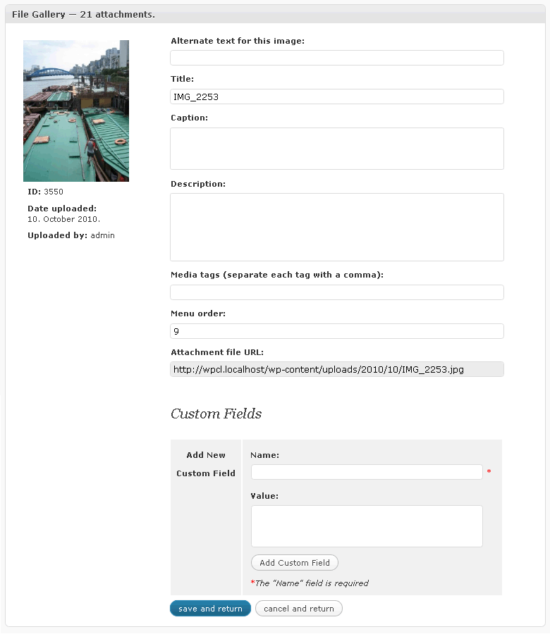
Use this form to edit attachment data and then click "save and return". Or just click "cancel and return" to do just that - return to the attachment list.
Clicking the image thumbnail in the top right corner will open its enlarged version in an lightbox, if the attachment is an image.
Attachment originals and copies
Originals are attachments that have copies, but they themselves are not a copy.
Copies are, well, copies of originals :)
Copying attachments from other posts
There are two ways to copy attachments from other posts.
The first one is by using one of the Main buttons (third one) in
the File Gallery box. When that button is clicked, it will open an dialog.
The dialog looks something like this:

Currently, it's this simple: just type the post ID into the field
and click continue to copy all attachments from the post with that ID.
I might improve this feature in the future :)
The second way is to open the Upload/Insert window , and then click the Media library tab.
Then click on the "Exclude current post's attachments" link
to show only attachments which are not already attached to current posts:
.
You will then see a list of attachments that are either attached to
another post (red background), or are not attached at all (white background). Use
the checkbox on the right side of each attachment, next to the "Show"
link, to select attachments you'd like to copy to current post.
Then use the button at the bottom of the window (the
one that says "Attach all checked items to current post") to
copy selected attachments.
After the attachments have been successfully copied to the current post, a notification will show up above the button: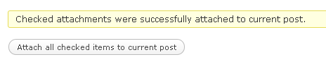
When an attachment is copied, only its data found in the database is copied into a new attachment, the actual file on the server is not duplicated.
Deleting originals
When you try to delete an original attachment, File Gallery will warn you about it:
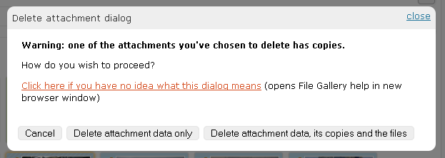
You have three options, of which the first one is obvious - click "Cancel" and the dialog will disappear.
Choosing "Delete attachment data only" will delete just the original's data. Its copies and the actual file on the server will not be deleted, and one of the copies will be promoted into an original.
Choosing the third option, "Delete attachment data, its copies and the files", will delete the original, all of its copies, and the actual file on the server. Be sure that this is what you want when clicking the button, as there is no undo.
Media tags
Media tags are tags for your attachments.
They function the same as post tags do for your posts.
You can assign them to attachments either via Media library, or via attachment editing screen in File Gallery box.
You could then, for example, use them to build a custom gallery, containing only attachments that have a certain tag assigned to them.
While you're editing a post, click on the "Switch to tags" button in the File Gallery box (just above attachment list).
Attachment list will be replaced with clickable tag list.
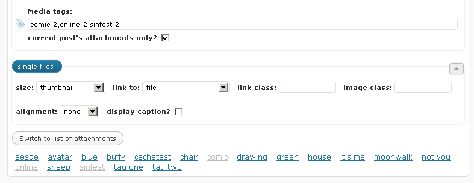
When you click on a tag, it will appear in the media tag field above, inside the first fieldset. Click on it again and it will be removed from the list.
Then insert a gallery, save your post and see the results :)
Media settings page options
All "File Gallery" related settings are integrated into WordPress' Media settings admin page, found on the main WordPress admin menu under Settings -> Media.
Most of the options are self-explanatory, I believe, but caching should probably be mentioned here.
Cache
Q: What is cache?
A: I think the first section of a post on Tutorial9 about WordPress caching plugins sums it up really nice :)
"File Gallery" caches most of the output it creates - both in frontend and backend - via WordPress' transients.
Cache is disabled by default, you'll have to enable it on the Media settings page.
Tip: be sure to clear the cache (there's a button for that on the Media settings page) when you add a new gallery template, otherwise it won't show on the dropdown list in File Gallery box on post editing screens.
Custom gallery templates
With this plugin are included three gallery templates:
- default (standard WordPress template)
- 'File Gallery' (example with thumbnails)
- 'List' (text-only example)
These serve only as examples so you could create your own templates.
How can I create my own templates?
It's easy, but you'll need some basic knowledge of PHP.
Go to "File Gallery"'s folder and open the subfolder named "templates" - that's where the three included templates reside - and take a look at the files inside.
Template name is the name of the folder in which the template resides.
Each template consists of a gallery.php file, and a gallery.css file.
A) gallery.php
This file contains the code for a single item in the gallery.
At the beginning of the file, two variables need to be declared:
- $starttag - this is the tag used for gallery wrapper element (default is 'div')
- $cleartag - this is the tag used for clearing floats so you could specify the number of columns in a gallery (default is "\n<br class='clear' />\n" - "\n" is not obligatory there, it represents a new line characteer and is just for the looks)
The rest of the variables you can use in a template, in form of variable_name - value
- $endcol - outputs "gallery-endcol" (if it's the last attachment in that column)
- $link - link to attachment file or attachment page (if set)
- $title - attachment title
- $link_class - class of the link (if link and link class are set)
- $thumb_link - attachment thumbnail URL
- $thumb_width - width of attachment thumbnail
- $thumb_height - height of attachment thumbnail
- $caption - attachment caption (if set)
- $description - attachment description (if set)
Everything else is HTML :)
B) gallery.css
This file contains the CSS code used to style your gallery template.
Tip: prefix your selectors with .gallery.template-name.
If your template is named "my-first-template", you should prefix
a selector like this:
.gallery.my-first-template .gallery-item
Now just place your custom gallery templates in a subfolder
named
"file-gallery-templates", inside your theme's folder, and they
will appear in template dropdown within the File Gallery box on post editing
screen.
For example: if your theme's folder is "my-wp-theme", your structure would look like this:
my-wp-theme
'--------> file-gallery-templates
'--------> your-custom-template
'--------> gallery.php
'--------> gallery.css
Tip: you can change the name of that folder
("file-gallery-templates") via these two filters:
file_gallery_templates_folder_abspath and file_gallery_templates_folder_url
Functions you can use in your themes
There are two functions you might find useful in your own themes.
-
file_gallery_list_tags( $type )
will list all media tags.$type can be: html, object, array or json
-
file_gallery_shortcode( $attributes )
will fetch attachments from a post.Default $attributes are:
array(
'order' => 'ASC',
'orderby' => ”,
'id' => $post->ID,
'columns' => 3,
'size' => 'thumbnail',
'link' => 'attachment',
'template' => 'default',
'attachment_ids' => ”,
'linkclass' => ”,
'imageclass' => ”,
'tags' => ”,
'tags_from' => 'current',
'output_type' => 'html',
'output_params' => true
)where output_type parameter can also be html, array, object or json.
If attachment_ids is left empty, the function will fetch all attachments.
If tags are specified, attachment_ids will be ingored.
Support for other plugins
File Gallery will play nice with the following plugins:
Media tags - if installed, File Gallery will use "Media tags"' taxonomy name for media tags. "Media tags" uses media-tags by default, but user can enter a custom value on permalinks options page. "File Gallery" uses media_tag.
WordPress Mobile Edition - your custom gallery templates will work just fine in mobile edition.
WPML - if you have WPML plugin installed and you're
editing a post that is a
translation, you'll notice a bluish link at the bottom of the Language
metabox. It allows you to copy all attachments from the original
post
in just two clicks.
Filters within File Gallery
- file_gallery_templates_folder_abspath - when you hook on it, your function will receive one argument: current absolute path to the file-gallery-templates folder within your theme dir.
- file_gallery_templates_folder_url - same as above, but this time URL instead of absolute path.
- file_gallery_parse_attachment_data - first argument is HTML, linked or non-linked image representing an attachment. Second argument is that attachment's ID.
- file_gallery_attachment_copy_title_extension - you can choose to add an extension to attachment title when you copy it from one post to another. Pretty useless, now that I think about it, but it's there and you can use it :)
If you want me to add a new filter somewhere - just leave a comment or e-mail me and I promise I'll add it as soon as humanly possible :)
That's it!
Please let me know If I've failed to explain something.
Thanks ;)